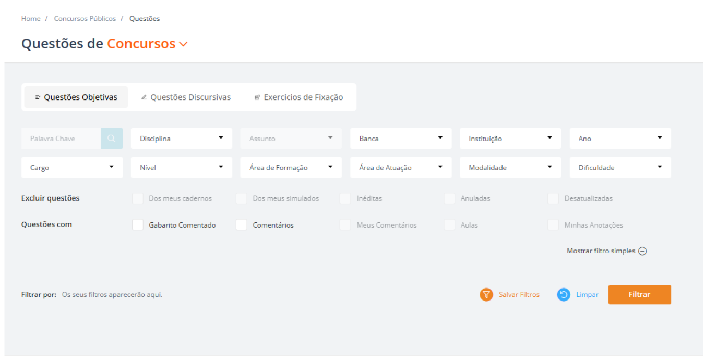
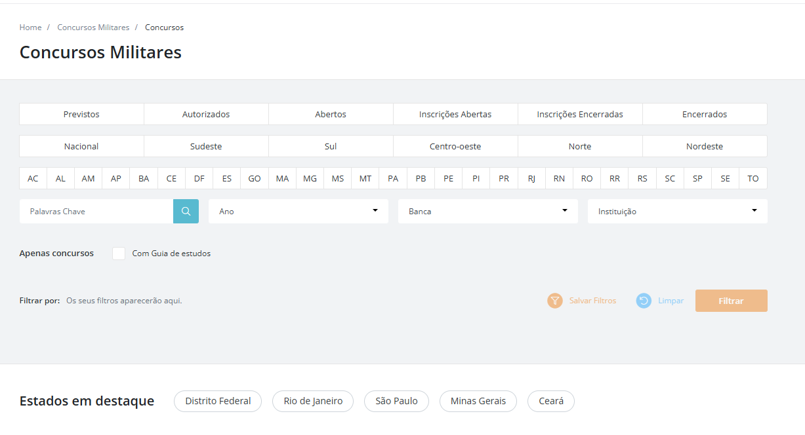
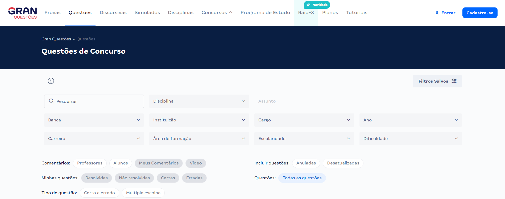
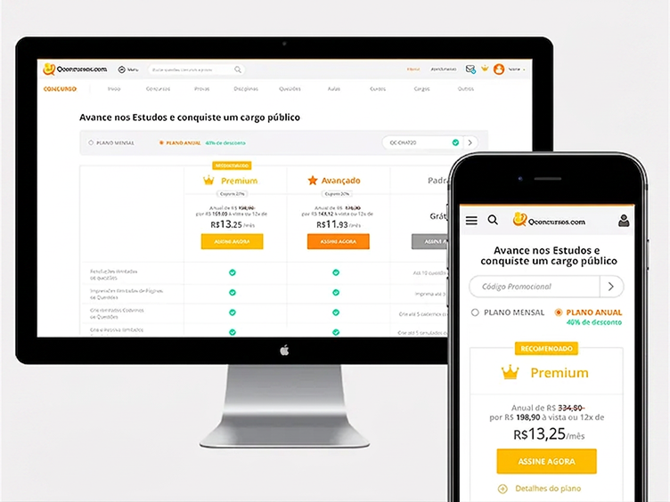

From 600K to 10M Users: The Filter Behind QConcursos' Growth
An alternative cut of the same five years at Brazil's largest exam-prep platform — this time centered on the search filter that turned a 605K-question database from noise into signal, and a pricing decision that quietly moved the revenue needle, both part of the story behind the company's R$208M acquisition.

The business.
QConcursos is Brazil's largest platform for civil-service exam preparation. In Brazil, federal, state, and municipal government positions are fiercely competitive — they offer stability and strong salaries, and candidates often study for years before passing. The platform organizes questions, mock exams, and courses by examining board, job role, and subject.
I joined in 2014, working directly with the three founders. Over five years, as the company grew from hundreds of thousands to millions of users, my role evolved from generalist to the Product & Innovation team, where I led the redesign that is the focus of this case. The platform's differentiator was always the sheer size of its question database — and it's exactly that volume that becomes the central challenge in what follows.
The platform's defining trait was always the size of its database — and that same size is what turns into the core challenge of this case.
The scale of the challenge.
An illustrative growth curve, anchored to the known milestones — every year in between is an interpolation, not a measured data point.
2014 — ~600K users at the start of my time there. 2017 — 3.75M registered students (public figure). 2019 — 10M+ active users, my exit. The curve between points is illustrative only.
The problem.
As the question catalog grew, finding the right question — for the right examining board, the right job role, the right subject — became progressively harder. A candidate studying for one specific contest needed surgical precision, not a generic keyword search.
605K+ questions catalogued on the platform (public data, 2017). Without a structured way to filter by examining board, institution, job role, and subject at the same time, that volume turned into noise instead of value.
How I validated the problem.
Before designing anything, the team talked to Customer Support to understand the recurring complaints about searching for questions. Tickets were categorized by topic and criticality level, and when a topic accumulated a high volume of repeated complaints, it moved up the redesign priority queue. A usage-metrics panel, visible to the team, helped confirm where the friction actually was.
- 3 criticality levels used to classify tickets — critical, medium, secondary
- The question filter was one of the topics that emerged from that classification as a top priority
The solution: question filter.
A panel with 12 filter fields — Subject, Topic, Examining Board, Institution, Year, Job Role, Level, Study Area, Specialization Area, Modality, Difficulty, and Keyword — where each selection automatically refines the available options in every other field.
How it works: cascading filter.
No field is independent. Choosing a value automatically narrows the available options in the fields that follow, guiding the user to the exact set of questions they need.
The pattern repeats.
The same cascading-filter logic — fields that refine each other — didn't stay confined to the Questions section. It was reapplied across other areas of the platform, including the Military Contests search. Contest status, region, state, year, examining board, and institution work as dependent filters — the same progressive-refinement principle applied with different facets. An interaction pattern designed once, reused across several sections of the platform.

Impact on the user.
Estimated time saved from filtering by board, role and subject at once instead of separate searches. 12 combinable fields vs. 1 keyword-search field in the previous version. The new panel became the single entry point that came to concentrate most of the traffic to the Questions section. Illustrative estimates — the platform had no detailed analytics instrumentation at launch time, so these numbers represent a plausible reading of the gain, not a period-accurate measurement.
Evolution through usability testing.
Three of the improvements introduced after the initial launch, prioritized from usability testing with real platform users.
Save filters
Usability testing showed that redoing the same search every time was a friction point. Saving a filter became a feature, along with a visible trail of active filters — each individually removable — to keep it clear what was being applied.
Exclude questions
Repeated, outdated, or already-mastered questions could be removed from the results, keeping the filter relevant throughout a student's studies.
Commented answer key
A teacher's explanation per question, in both video and text, for whoever prefers to read or watch.
Impact on the market.
The cascading multi-criteria filter stopped being a one-off QConcursos differentiator and became a reference point among exam-prep platforms in the years that followed, with competitors adopting similar filter logic.
Keyword search
12-field cascading filter

The business outcome.
R$208 million — the value of QConcursos' acquisition by Grupo Yduqs (owner of Estácio, IBMEC and Damásio), announced in early 2020.
The question-filter redesign, and the broader design work of that phase, were part of the product maturation that helped prepare the platform for that acquisition. It wasn't the isolated cause of the value paid — but it was a measurable part of the story of how the product evolved from a functional tool into a category-reference platform.
The price no one notices.
With the subscriber base already in the millions, I questioned the founder responsible for finance about the logic behind the R$13.25 Premium monthly plan. His answer revealed the calculation behind the price — and opened space for a proposal: use the "charm pricing" concept to raise the value without creating a sense of loss for people already paying.
R$13.25 → R$13.90 — a R$0.65 increase, perceptible, but below the loss-perception threshold.
The change in practice.
The same plans page, desktop and mobile, before and after the adjustment. No other visual or flow change — only the price.

The result of the adjustment.
Monthly and annual figures are estimated over a base of ~3.5M subscribers. Safety of the change was validated by tracking three metrics: cancellation rate, acquisition rate, and stated cancellation reason. Illustrative estimate based on the subscriber base reported by me and the prices shown in the platform screenshots — not real-time revenue instrumentation.
Learnings.
Validate before designing
Validating the problem with real data — Customer Support, surveys, public usage data — before designing any solution avoided rework in the filter redesign.
Refine > reinvent
Not every redesign needs to reinvent the structure. The biggest gain is sometimes in giving clarity and organization to a product users already rely on.
Missing post-launch metrics
There wasn't instrumentation structured enough to quantitatively prove the filter's impact — only the platform's overall growth.
Business context reshuffles priorities
Working five years on the same platform showed how design priorities shift when business context — like preparing for an acquisition — enters the picture.
How I'd do it today, with AI.
1 · AI ticket triage
Today I'd use AI to auto-pre-classify Customer Support tickets by topic and criticality, speeding up the problem-validation stage that used to be manual.
2 · Faster prototypes and variations
AI-assisted generation tools would let us test multiple UI variations of the filter in hours, not days, before validating with real users.
3 · Faster research synthesis
AI would help synthesize interviews and usability tests faster, identifying friction patterns without relying solely on manual transcript reading.
4 · Metrics from day one
With today's AI-supported analytics tools, I'd instrument the launch from the start — closing the measurement gap that remained a learning from this case.